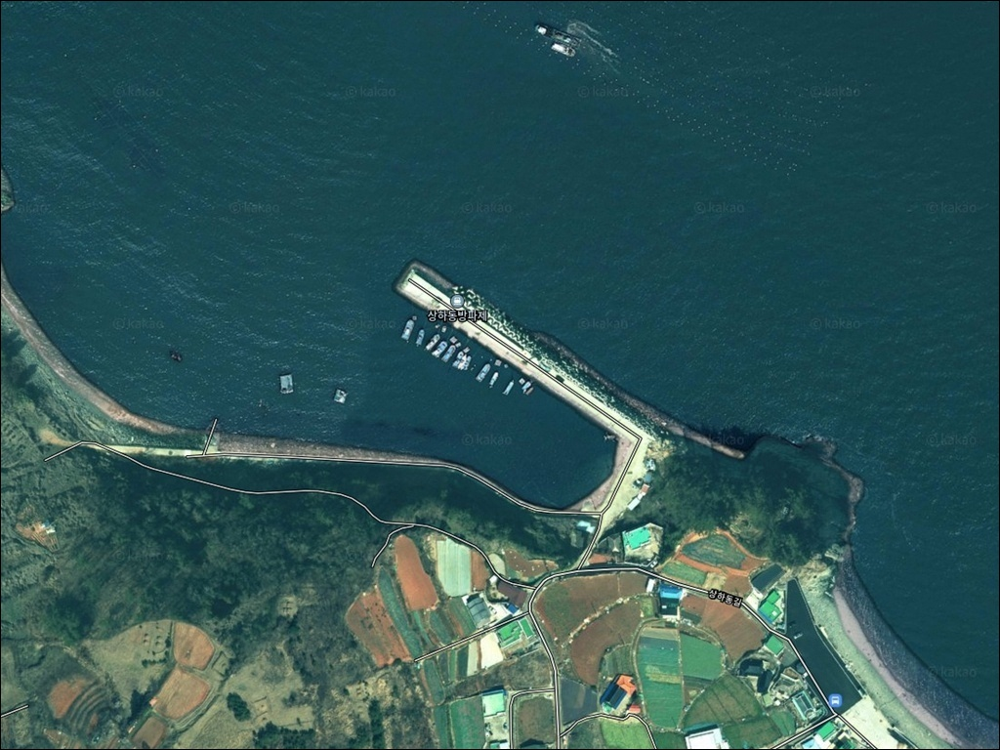
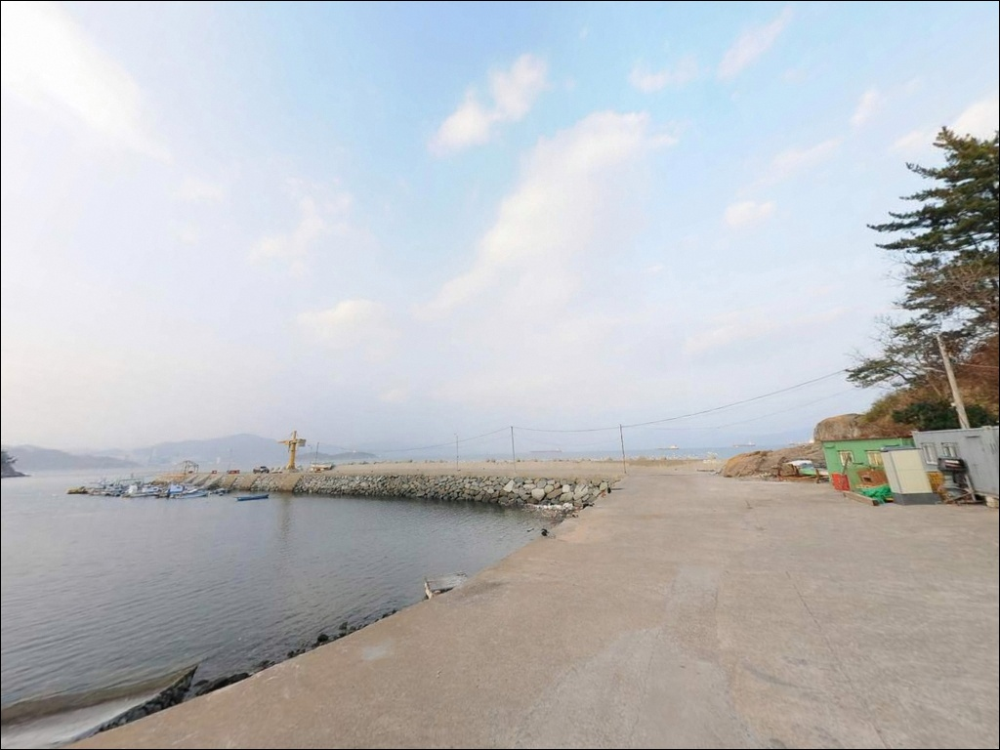
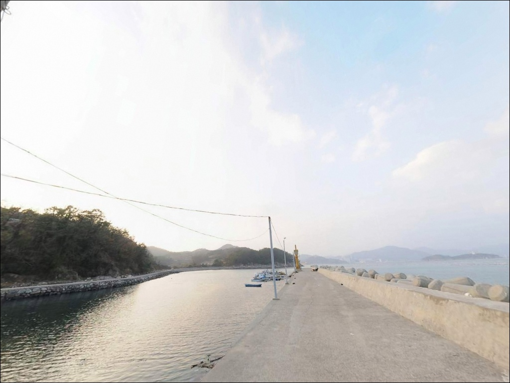
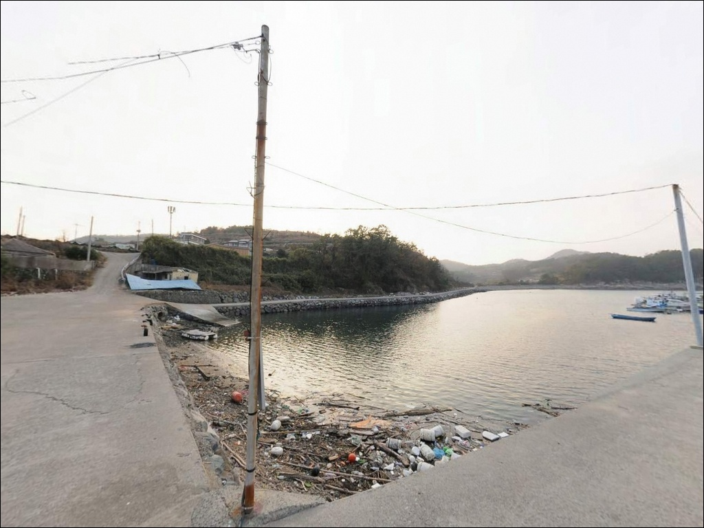
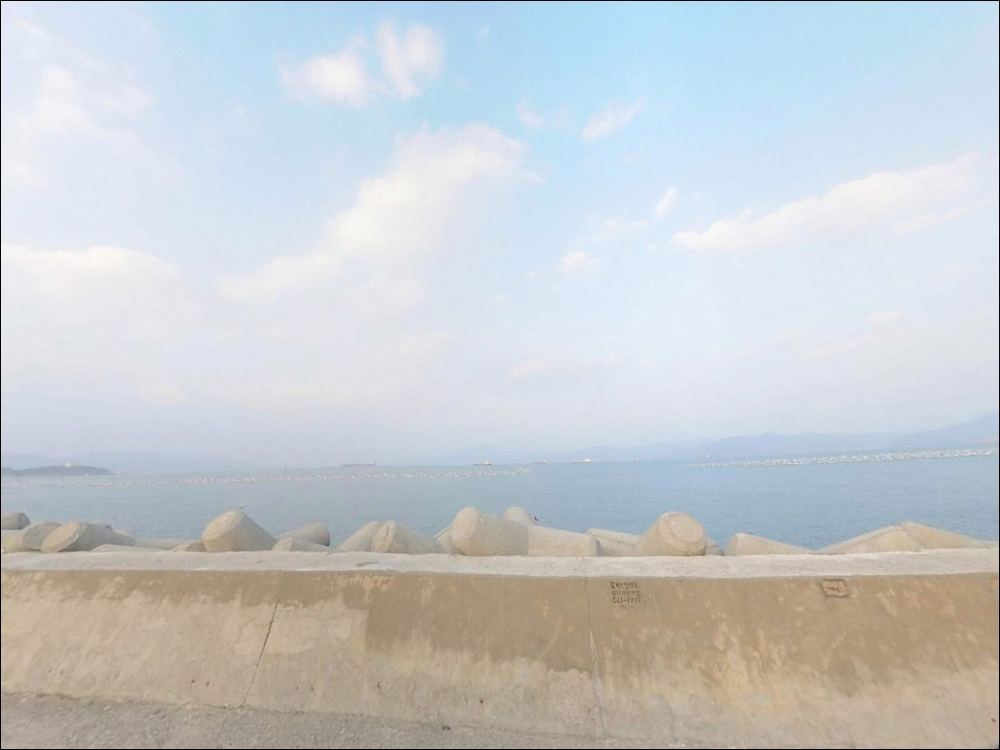
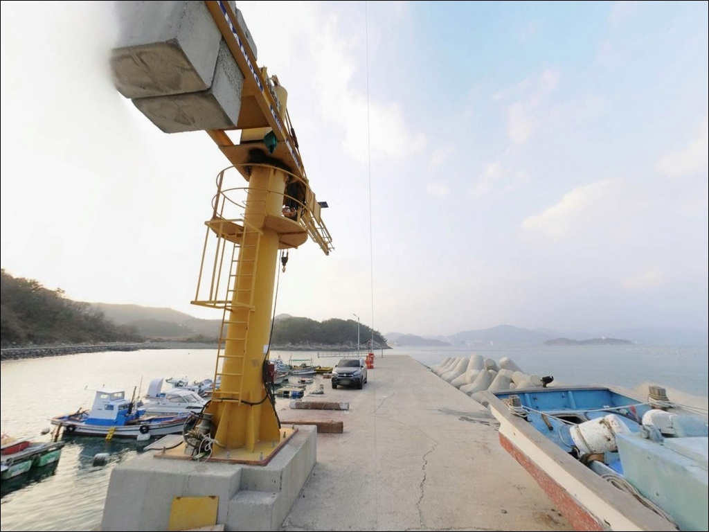
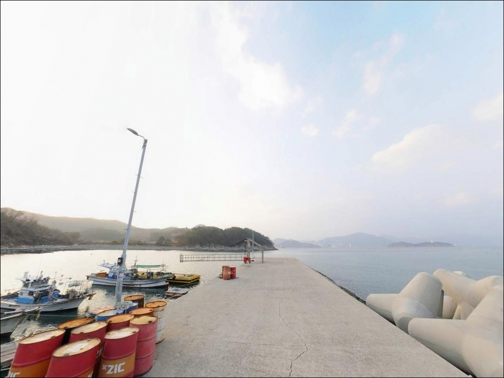
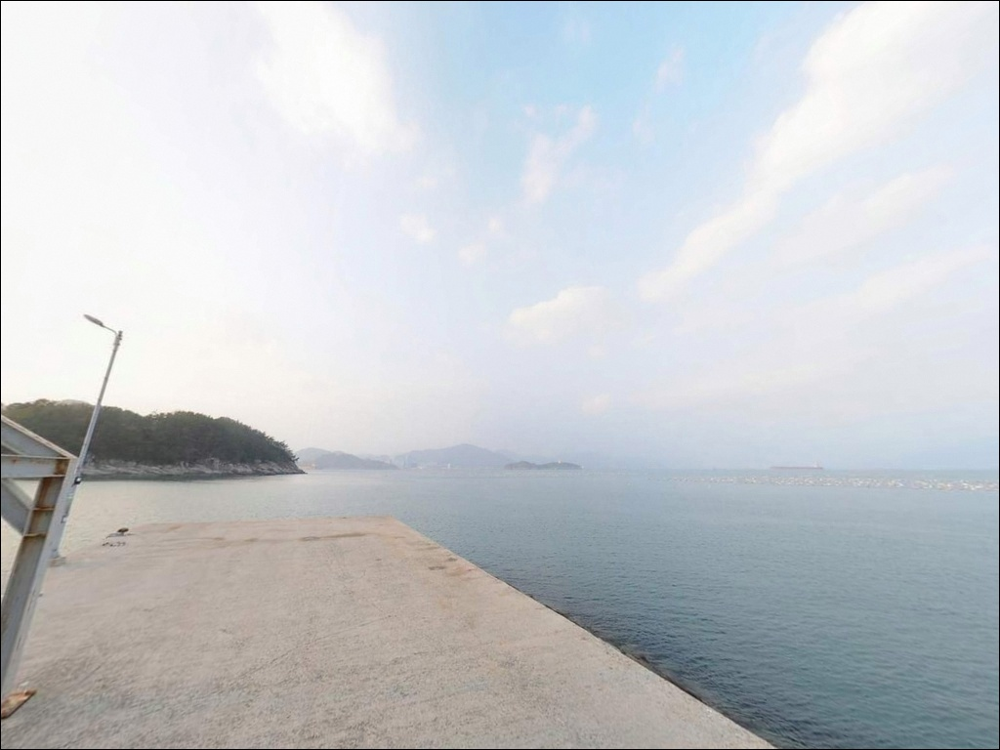
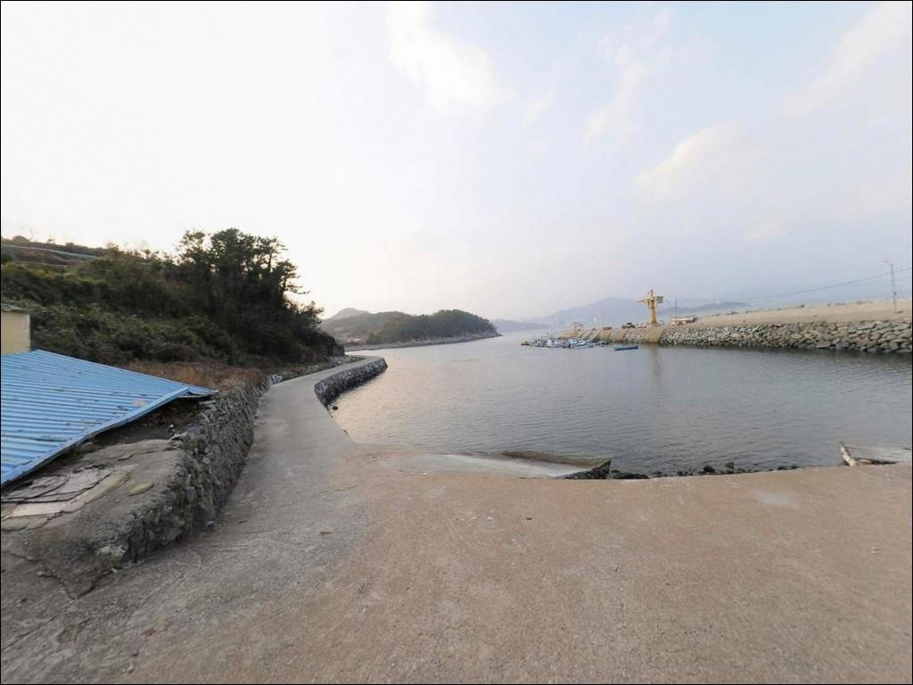

석축 끝단에서 원투가 안정적인 여수 상하동방파제의 지형별 특징
이 페이지에는 광고(제휴 링크 포함)가 있으며, 광고 링크를 통해 구매하면 운영자가 판매 수익 또는 수수료를 받을 수 있습니다. 포인트 사진: 카카오맵 스카이뷰·로드뷰. 이 페이지의 지도·사진 이미지는 카카오맵의 실제 서비스 이미지와 다를 수 있습니다.


포인트 안내
상하동방파제
전남 여수시 돌산읍 우두리 산 72-4
테트라포트 구간은 발판 간격이 불규칙하고
난간이 없습니다.
야간에 조명 없이 진입하면
낚시보다 발판 찾는 일이 먼저가 됩니다.
구간별 지형을 파악하고 들어서는 것이
이 방파제 공략의 출발점입니다.
상하동방파제는 돌산도 북측
우두리 상동마을 앞 해안에 위치한
방파제와 갯바위가 결합된 복합형 포인트입니다.
초입 갯바위에서 시작해 중간 테트라포트 구간,
끝단 석축 발판으로 이어지는 구조로
낚시 방식에 따라 자리를 달리 선택할 수 있습니다.
이 글은 상하동방파제의
진입 동선, 지형별 낚시 여건, 차박 환경,
대안 포인트 정보에 집중합니다.
조황 보장이나 특정 어종 단정은
이 글의 범위에 포함되지 않습니다.

1. 진입 동선과 차량 접근 여건
돌산대교를 건넌 뒤
내비게이션에 주소를 입력하면
우두리 방향 해안도로를 거쳐
상동마을 안길로 안내됩니다.
마을 도로 폭은 일반 승용차 진입에
무리 없는 수준이며,
대형 SUV나 캠퍼밴은 좁은 구간 진입 전
도로 폭을 미리 확인해두는 편이 안전합니다.
회차 공간은 방파제 입구 인근 평지에서
확보됩니다.
마을 안까지 들어가버리면
회차가 번거로울 수 있으니
방파제 진입부 공터에서
방향을 잡는 편이 효율적입니다.
주차는 방파제 초입 공터에서
3~5대 이상 동시 주차가 가능한 수준입니다.
버스정류장 인근 도로변에도
정차 가능한 공간이 형성되어 있습니다.
어선 이동 동선을 막지 않는
위치 선택이 기본 매너입니다.

2. 차박 환경과 야간 체류 여건
방파제 초입 공터는
마을과 다소 거리를 두는 위치라
소음 측면에서 마을 안쪽보다
여유 있는 편입니다.
다만 상동마을은 소규모 어촌 마을이라
주민 생활권과 가깝습니다.
새벽 시간대 시동음과 음악 등 소음은
최소화하는 것이 기본 매너입니다.
야간 조명은 마을 가로등과
방파제 일부 구간 가로등이 광원 역할을 합니다.
방파제 끝단은 조명이 제한적이므로
헤드랜턴은 필수입니다.
테트라포트 구간은 야간에 발판 식별이 어려워
이동 시 각별한 주의가 필요합니다.
낚시 후 하룻밤 머무는 용도라면
방파제 입구 공터가 가장 현실적인 자리입니다.
외해 직접 노출이 없는 내만형 위치라
파도 소음이나 너울 영향은
상대적으로 적은 편입니다.


3. 주변 편의시설 및 인프라 현황
우두리 마을 내에
하나로마트가 입점해 있습니다.
식재료, 얼음, 기본 생필품은
이곳에서 해결할 수 있습니다.
우두리 택지 시가지에도
편의점이 확인됩니다.
낚시 소품이 필요하다면
돌산읍 평사리 방면의
낚시용품점을 활용하는 편이
현실적입니다.
출발 전 채비와 소품을 갖추고
현장에 진입하는 것이
시간을 아끼는 기본 준비입니다.
방파제 내 별도 화장실은
설치되어 있지 않습니다.
긴 체류 계획이 있다면
인근 마을 시설 위치를
사전에 파악해두는 것이 좋습니다.

4. 낚시 전에 챙겨야 할 판단 기준
상하동방파제는 돌산대교와 여수 구항 사이
수로형 조류의 간접 영향권에 위치합니다.
창조와 낙조 전환 시 조류 방향이 바뀌는
타이밍을 파악하는 것이
포인트 활용의 핵심입니다.
바다타임에서 우두리 인근 물때를
확인하고 출발 시각을 맞추는 것이
기본 전략입니다.
테트라포트 구간은 발판이 불규칙하고
난간이 없습니다.
주간에도 이동이 조심스러운 구간이라
야간 진입 시에는
헤드랜턴과 미끄럼 방지 신발,
구명조끼가 반드시 필요합니다.
갯바위 구간도 화강암 계통 암반이라
물기가 있을 때 미끄러움이 강한 편입니다.
기상이 급변하는 날에는
방파제 끝단과 갯바위 접근을
피해야 합니다.
출조 당일 아침
기상청 예보와 해양 특보를
다시 한번 확인하는 습관이
안전 출조의 기본입니다.

5. 복합 지형이 만드는 낚시 여건 분석
상하동방파제의 지형은
초입 갯바위, 중간 테트라포트, 끝단 석축
세 구간으로 나뉩니다.
각 구간마다 수심과 바닥 구조가 달라
낚시 방식도 자연스럽게 구분됩니다.
수심은 얕은 내항에서 시작해
방파제 끝단 외항 방향으로 갈수록
깊어지는 구조로,
바다타임 기준 0.5~9.9m 범위가
이 해역 전반에 걸쳐 형성됩니다.
테트라포트 구간은
구조물 사이에 어군이 붙는 지형입니다.
조류가 흐를 때 먹잇감이
테트라 주변에 집결하는 패턴이
이 일대 방파제에서 공통적으로 나타납니다.
끝단 석축은 평탄한 발판 덕분에
원투 캐스팅이 안정적이며,
외항 수심 구간까지 채비를 보낼 수 있습니다.
방파제 좌우로 이어지는 갯바위는
도보 접근이 가능합니다.
암반 지형 특성상 어류의 은신처가
많은 구조로,
갯바위 경계선을 탐색하는 낚시 방식이
이 포인트에 잘 어울립니다.
최신 조황은 출조 전에
반드시 검색해 확인하십시오.


6. 지형에 어울리는 낚시 스타일
석축 끝단은 원투낚시에 가장 잘 맞는 구간입니다.
평탄한 발판에서 안정적으로 캐스팅이 가능하고
외항 수로 방향 모래·뻘 바닥을
채비로 탐색할 수 있습니다.
물때가 돌아오는 시간대에
바닥 가까이 채비를 세팅하는
처넣기 방식이 이 구간에 적합합니다.
볼락 라이트게임은
테트라포트 구간과 갯바위 경계부에서
노려볼 만합니다.
구조물 주변 어군을 소형 지그헤드로
천천히 탐색하는 방식이 어울리며,
야간에 조명 영향을 받는 구간에서
집어 효과가 올라오는 편입니다.
가을 이후 수온이 내려가는 시기부터
씨알이 올라오는 경향이 있습니다.
갑오징어 에깅은
방파제 끝단과 갯바위 인근에서
바닥 긁기 운영이 가능한 구조입니다.
이 일대 해역은 돌산도 서측을 따라
이동하는 갑오징어 경로에 위치하며,
여름~가을 시즌에 에깅 채비를
먼저 운용해보는 것이 효율적입니다.
찌낚시는 외항 흐름을 타는 테트라 주변에서
운용하는 방식이 어울립니다.
감성돔이나 숭어 등
중층 어종을 노리는 데 적합하며,
구조물에 붙는 어종을 중심으로
탐색하는 방식이 기본입니다.

7. 대안 포인트와 플랜 B 동선
상하동방파제에서 여건이 여의치 않다면
월전포항이 첫 번째 대안입니다.
차량으로 약 2.5km 거리에 위치하며
방파제와 갯바위 구조가 유사해
동일한 낚시 방식으로 공략이 가능합니다.
주차 공터도 상하동보다 넓은 편입니다.
진목항도 가까운 대안입니다.
돌산도 서측을 따라 이동하면
약 4km 거리에서 닿을 수 있으며,
이 일대 해역 어종 패턴을
공유하는 포인트입니다.
상하동→월전포→진목항 순서의
탐색 동선이 이 권역에서
효율적인 이동 경로입니다.
돌산항은 규모와 시설 면에서
이 권역의 대표 항구입니다.
차박 대안으로는 돌산항 주차장이
인프라가 우수하며,
야경을 원한다면
돌산공원 주차장도 선택지가 됩니다.

구간별 지형을 알면
상하동방파제가 더 넓어집니다
원투낚시와 루어를 함께 즐기고 싶은
낚시인에게 상하동방파제는
한 자리에서 복수 방식을 운용할 수 있는
복합 지형 포인트입니다.
갯바위까지 도보로 이동할 수 있어
탐색 범위가 넓고,
돌산대교에서 가까워
다른 포인트와 연계하기 좋은 위치입니다.
테트라포트 구간은 발판 위험이 있고
야간 조명이 제한적입니다.
이 두 가지 조건을 모르고 들어서면
낚시 전에 이미 체력을 소비하게 됩니다.
구명조끼, 헤드랜턴, 미끄럼 방지 신발은
이 방파제에서 선택이 아닌 기본 장비입니다.
조용한 어촌 마을 옆에서
물때를 맞추고 하룻밤 대기하는
생활낚시 차박 스타일이라면
상하동방파제는 어울리는 선택지가 될 수 있습니다.